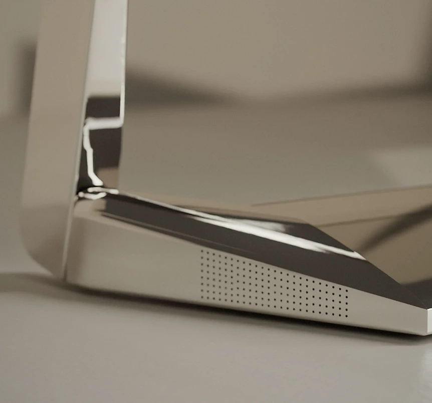
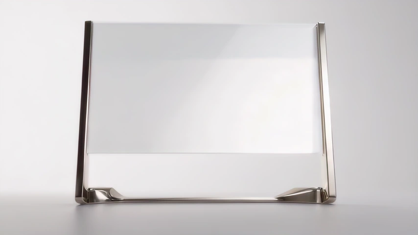
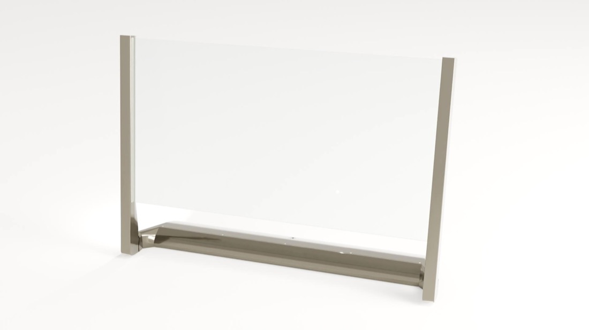
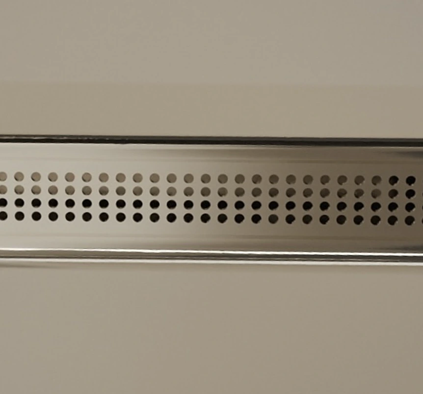

Premium craftsmanship
Designed and crafted with care to elevate the environment and spaces in which it inhabits.


Made for the way we think and create

Technology should adapt to the way we think, create, and move through the world. Not the other way around.

Every element of ANTIK has been considered with a simple idea in mind: technology should feel like a natural extension of the way we think, create, and interact with the world.
From its sculptural form to its carefully selected materials, ANTIK brings together thoughtful engineering and a human-centered approach to computing, reimagining not only what a computer can do, but how we experience it.
We believe the best technology should feel natural to use and supportive of your actual daily work.

Designed and crafted with care to elevate the environment and spaces in which it inhabits.

Designed around an AI-native operating system that helps you move between ideas, tasks, and tools more naturally.

We bring your digital workspace into your physical environment, so you can stay present in both.